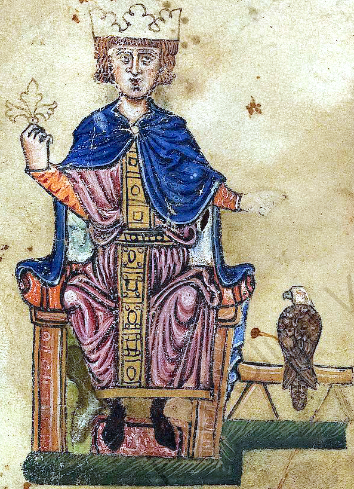
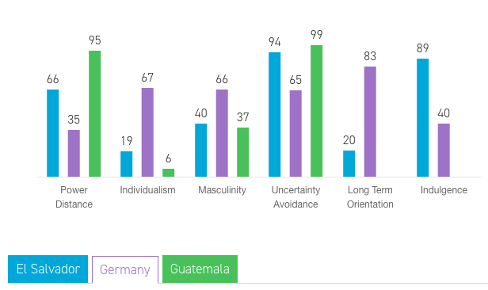
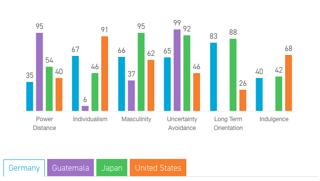
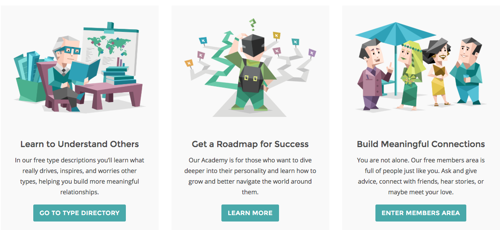

<div class="reveal"><div class="slides"><section data-markdown data-separator-notes="^Note:" data-separator="---" data-background="../../keynote.jpg" data-background-repeat="repeat"><script type="text/template">

# CVLTURE
## The way of acting, feeling and thinking.
#### elidiaz.com

---


---
# Geert Hofstede
#### Professor Organizational Anthropology 
#### Maastricht University
#### Former IBM employee
---
# Modelo de 5 Dimensiones
### Para evaluar diferencias culturales
---




---
# Distancia al poder
#### Capacidad de aceptar y esperar la diferencia de poder
---
## Gran distancia
#### Muchos escalones para interactuar con el poder
#### El liderazgo se basa en jerarquía
#### Reuniones muy esporádicas
---
## Menor distancia
#### El poder no es absoluto
#### El liderazgo se demuestra por los conocimientos no jerarquía
#### Reuniones habituales
---
# Individualismo vs colectivismo
### Yo vs Nosotros
---
## Individualismo
#### Fuerte relacion (padres - hijos)
#### Autorealizacion (deber y responsabilidad)
#### Honesto aunque duela
---
## Colectivismo
#### Permanecen en grupos cuidando de ellos a cambio de lealtad
#### Priorizan la Confianza, lealtad, redes sociales
#### Comunicacion indirecta
---
# Masculinidad – Feminidad
Ser el mejor vs Querer lo que se hace
---
## Masculinidad
### Valoran logros, heroismo y asertividad
### Sociedad competitiva 
### El estatus es material
---
## Feminidad
### Cooperacion
### Modestia y justicia
### Calidad de vida
---
# Evasión de la Incertidumbre
### Amenaza por situaciones ambiguas
### (controla o deja que suceda)
---
## Alta Evasión
### Alta burocracia (sellos e instrucciones)
### Reglas y estructuras
### Conservador
---

---
# Orientación a Largo Plazo
## Perspectiva hacia el futuro
---
# Corto plazo
### Ahorran poco
### Mantienen tradiciones
### Resultado rapidos
---
# Largo Plazo
### Capacidad de adaptacion a nuevas condiciones
### Ahorran e invierten
### La verdad depende de la situacion, contexto y tiempo

---

---
# Enlaces   
## hofstede-insights.com
## 16personalities.com
---

---
<!-- .slide: data-background="#ff0000" -->
# Thank You
## elidiaz.com


</script></section></div></div>

<link rel="stylesheet" href="https://cdnjs.cloudflare.com/ajax/libs/reveal.js/3.1.0/css/reveal.min.css">
<link rel="stylesheet" href="https://cdnjs.cloudflare.com/ajax/libs/reveal.js/3.1.0/css/theme/night.min.css">
<script src="https://cdnjs.cloudflare.com/ajax/libs/reveal.js/3.1.0/lib/js/head.min.js"></script>
<script src="https://cdnjs.cloudflare.com/ajax/libs/reveal.js/3.1.0/js/reveal.min.js"></script>
<script src='../../main.js'></script>
